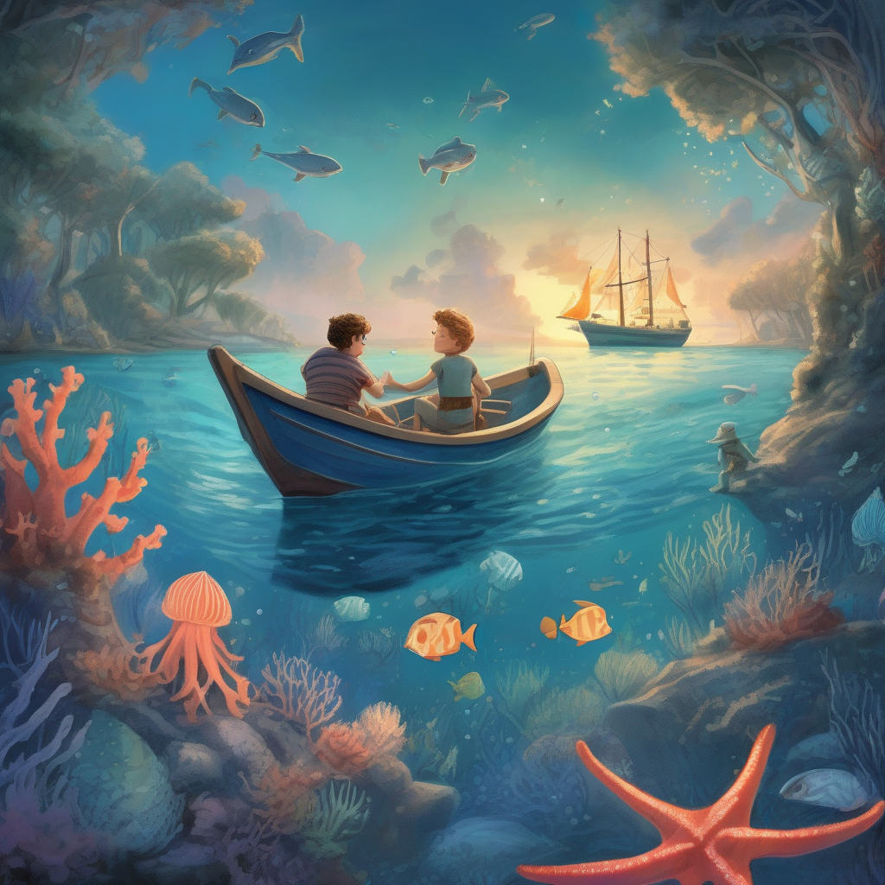
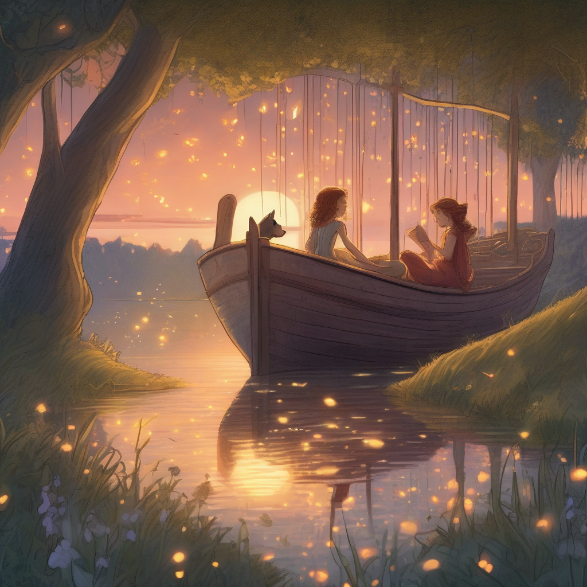
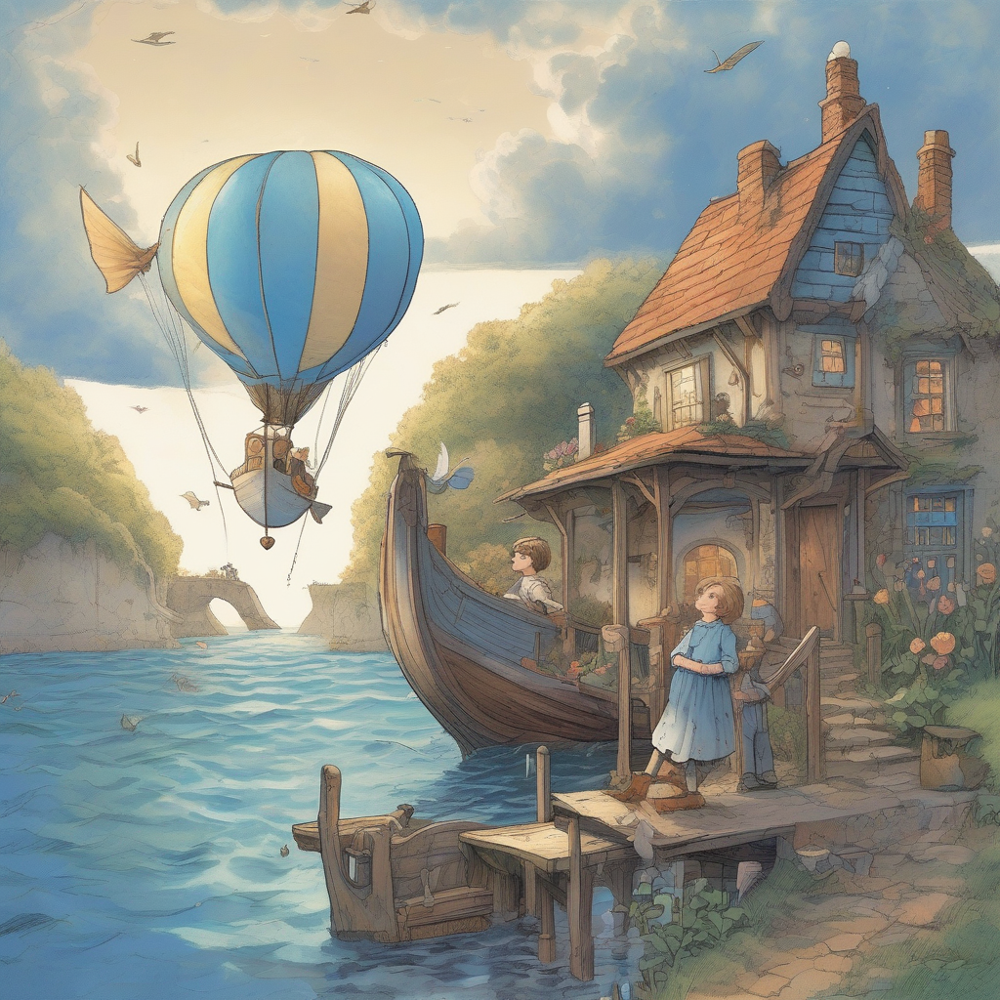

My Dream Story
Title: The Blue Boat Adventure and the Mysterious Starfish
Scene 1: Embarking on the Magical Voyage

Once upon a time, there was a little boy named Timmy and his mom, who lived in a cozy village by the sea. One sunny day, they found a shiny blue boat with wings, parked right outside their house! With excitement, Timmy and Mom hopped onto the boat and set sail. They looked up at the sky, wondering what they might find on this unusual adventure.
Scene 2: Encountering the Whimsical Sea Creatures
As they sailed across the blue sea, they came upon a school of talking fish who were having a mermaid tea party! Timmy and Mom joined in, laughing and sharing stories as they enjoyed fish sandwiches made from goldfish crackers. A friendly dolphin even showed them how to dance by balancing on its tail.

Scene 3: Searching for the Shimmering Starfish
As they continued their journey, Timmy and Mom noticed a strange glow in the distance. They sailed towards it, discovering a massive starfish with sparkling jewels embedded in its arms! The starfish said that it was missing a very important gem – the "Star of Wonder" – and asked for their help to find it.
Scene 4: Finding the Star of Wonder

Timmy and Mom, determined to assist the starfish, searched high and low throughout the sea. Along the way, they encountered peculiar creatures, such as a crab that played the violin and a jellyfish with glowing eyes that showed them the way. After much exploration, they finally found the Star of Wonder hidden behind a waterfall of dancing bubbles!
Scene 5: Returning Home with Newfound Wisdom
With the Star of Wonder in hand, Timmy and Mom returned to the magical starfish, who was overjoyed and grateful for their help. As a token of appreciation, the starfish gave them a tiny glowing shell that shimmered whenever they were lost or needed guidance.

Back on the blue boat, Timmy and Mom watched as the sun dipped below the horizon, casting beautiful hues across the sea. They realized that while their adventure was coming to an end, they had gained something far more valuable – a newfound sense of wonder and appreciation for the magical world around them.
From that day on, whenever Timmy felt lost or unsure, he would hold his glowing shell close, and it would guide him just like the starfish had done. And every time Mom looked at her son, she would be reminded of the incredible adventure they shared and the magic that lives in our world if we simply choose to believe.
Back to gallery
No copyright claimed on this material.